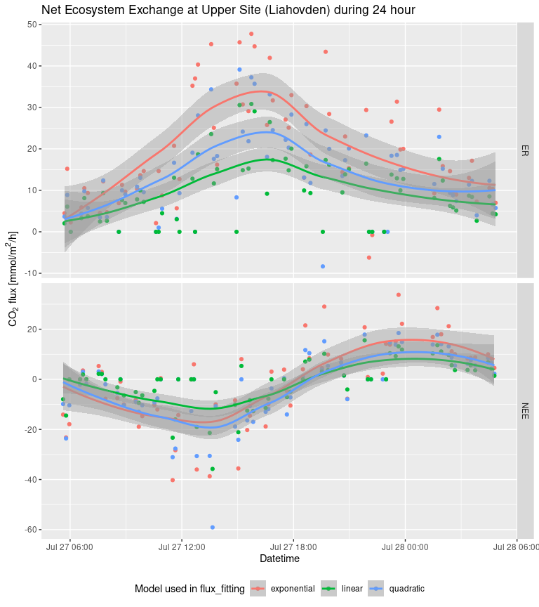

Note: fluxible is still in an early phase, it is fully functional but can be improved in many ways. Please get in touch for any problems or suggestions.
The Fluxible R package is made to transform any dataset of gas concentration over time into a gas flux dataset. It was originally made to be used with a closed loop chamber system connected to a gas analyzer. A function for use with a tent (taking leakage into account) is in development (see further developments).
The goal of fluxible is to provide a workflow that removes individual evaluation of each flux, reduces risk of bias, and makes it reproducible. Users set specific data quality standards and selection parameters as function arguments that are applied to the entire dataset. The package runs the calculations automatically, without prompting the user to take decisions mid-way, and provides quality flags and plots at the end of the process for a visual check. This makes it easy to use with large flux datasets and to integrate into a reproducible workflow. Using the Fluxible R package makes the workflow reproducible, increases compatibility across studies, and is more time efficient.
For a quick overview of how the package works, you can look at the poster that was presented at the European Geosciences Union Annual Meeting 2024.
Installation
You can install the development version of fluxible from the GitHub repo with:
# install.packages("devtools")
devtools::install_github("plant-functional-trait-course/fluxible")Example
For this example we will use the data that were recorded during the Plant Functional Traits Course 6 (PFTC6) in Norway in 2022 at the site called Liahovden (CITE when data paper out). The CO2 concentration data as well as air and soil temperature and photosynthetically active radiations (PAR) were recorded in a dataframe named co2_liahovden. The metadata for each measurements are in a dataframe called record_liahovden. This dataframe contains the starting time of each measurements, the type of measurement and the unique ID for each turf. The type of measurement describes if it was net ecosystem exchange (NEE), measured with a transparent chamber, or ecosystem respiration (ER), measured with a dark chamber.
We use the flux_match function to slice the data from co2_liahovden into each measurement and discard what was recorded in between.
library(fluxible)
str(record_liahovden)
#> tibble [138 × 3] (S3: tbl_df/tbl/data.frame)
#> $ turfID: chr [1:138] "4 AN1C 4" "4 AN1C 4" "27 AN3C 27" "27 AN3C 27" ...
#> $ type : chr [1:138] "NEE" "ER" "NEE" "ER" ...
#> $ start : POSIXct[1:138], format: "2022-07-27 05:37:30" "2022-07-27 05:42:00" ...
str(co2_liahovden)
#> tibble [89,692 × 5] (S3: tbl_df/tbl/data.frame)
#> $ datetime : POSIXct[1:89692], format: "2022-07-27 05:34:49" "2022-07-27 05:34:50" ...
#> $ temp_air : num [1:89692] 3 NA NA NA NA NA NA NA NA NA ...
#> $ temp_soil: num [1:89692] 2.96 NA NA NA NA NA NA NA NA NA ...
#> $ conc : num [1:89692] 468 469 468 468 468 ...
#> $ PAR : num [1:89692] 2.59 NA NA NA NA NA NA NA NA NA ...
conc_liahovden <- flux_match(co2_liahovden, record_liahovden)
str(conc_liahovden)
#> tibble [28,929 × 13] (S3: tbl_df/tbl/data.frame)
#> $ f_datetime : POSIXct[1:28929], format: "2022-07-27 05:37:40" "2022-07-27 05:37:41" ...
#> $ temp_air : num [1:28929] NA NA NA NA NA NA NA NA NA 3.03 ...
#> $ temp_soil : num [1:28929] NA NA NA NA NA NA NA NA NA 6.86 ...
#> $ f_conc : num [1:28929] 465 465 465 464 464 ...
#> $ PAR : num [1:28929] NA NA NA NA NA NA NA NA NA 20.6 ...
#> $ turfID : chr [1:28929] "4 AN1C 4" "4 AN1C 4" "4 AN1C 4" "4 AN1C 4" ...
#> $ type : chr [1:28929] "NEE" "NEE" "NEE" "NEE" ...
#> $ f_start : POSIXct[1:28929], format: "2022-07-27 05:37:40" "2022-07-27 05:37:40" ...
#> $ f_end : POSIXct[1:28929], format: "2022-07-27 05:41:10" "2022-07-27 05:41:10" ...
#> $ f_fluxID : Factor w/ 138 levels "1","2","3","4",..: 1 1 1 1 1 1 1 1 1 1 ...
#> $ f_n_conc : int [1:28929] 210 210 210 210 210 210 210 210 210 210 ...
#> $ f_ratio : num [1:28929] 1 1 1 1 1 1 1 1 1 1 ...
#> $ f_flag_match: chr [1:28929] NA NA NA NA ...Before calculating fluxes we need to fit a model to each measurement and estimate a slope of the concentration changing rate. We use the flux_fitting function with the model provided by Zhao et al. (2018). The function flux_quality also provides a quadratic and a linear fit.
slopes_exp_liahovden <- flux_fitting(conc_liahovden, fit_type = "exponential")
#> Cutting measurements...
#> Estimating starting parameters for optimization...
#> Optimizing fitting parameters...
#> Calculating fits and slopes...
#> Done.
#> Warning in flux_fitting_exp(conc_df, start_cut = ((start_cut)), end_cut = ((end_cut)), :
#> fluxID 77 : slope was estimated on 194 points out of 210 seconds
#> fluxID 85 : slope was estimated on 175 points out of 210 seconds
str(slopes_exp_liahovden)
#> tibble [28,929 × 30] (S3: tbl_df/tbl/data.frame)
#> $ f_datetime : POSIXct[1:28929], format: "2022-07-27 05:37:40" "2022-07-27 05:37:41" ...
#> $ temp_air : num [1:28929] NA NA NA NA NA NA NA NA NA 3.03 ...
#> $ temp_soil : num [1:28929] NA NA NA NA NA NA NA NA NA 6.86 ...
#> $ f_conc : num [1:28929] 465 465 465 464 464 ...
#> $ PAR : num [1:28929] NA NA NA NA NA NA NA NA NA 20.6 ...
#> $ turfID : chr [1:28929] "4 AN1C 4" "4 AN1C 4" "4 AN1C 4" "4 AN1C 4" ...
#> $ type : chr [1:28929] "NEE" "NEE" "NEE" "NEE" ...
#> $ f_start : POSIXct[1:28929], format: "2022-07-27 05:37:40" "2022-07-27 05:37:40" ...
#> $ f_end : POSIXct[1:28929], format: "2022-07-27 05:41:10" "2022-07-27 05:41:10" ...
#> $ f_fluxID : Factor w/ 138 levels "1","2","3","4",..: 1 1 1 1 1 1 1 1 1 1 ...
#> $ f_n_conc : int [1:28929] 210 210 210 210 210 210 210 210 210 210 ...
#> $ f_ratio : num [1:28929] 1 1 1 1 1 1 1 1 1 1 ...
#> $ f_flag_match: chr [1:28929] NA NA NA NA ...
#> $ f_time : num [1:28929] 0 1 2 3 4 5 6 7 8 9 ...
#> $ f_cut : Factor w/ 1 level "keep": 1 1 1 1 1 1 1 1 1 1 ...
#> $ n_conc : int [1:28929] 210 210 210 210 210 210 210 210 210 210 ...
#> $ Cm_est : num [1:28929] 435 435 435 435 435 ...
#> $ a_est : num [1:28929] -0.245 -0.245 -0.245 -0.245 -0.245 ...
#> $ b_est : num [1:28929] -0.00319 -0.00319 -0.00319 -0.00319 -0.00319 ...
#> $ tz_est : num [1:28929] 14 14 14 14 14 14 14 14 14 14 ...
#> $ f_Cz : num [1:28929] 465 465 465 465 465 ...
#> $ time_diff : num [1:28929] 0 0 0 0 0 0 0 0 0 0 ...
#> $ f_Cm : num [1:28929] 304 304 304 304 304 ...
#> $ f_a : num [1:28929] -0.4 -0.4 -0.4 -0.4 -0.4 ...
#> $ f_b : num [1:28929] -0.00152 -0.00152 -0.00152 -0.00152 -0.00152 ...
#> $ f_tz : num [1:28929] 11.3 11.3 11.3 11.3 11.3 ...
#> $ f_slope : num [1:28929] -0.156 -0.156 -0.156 -0.156 -0.156 ...
#> $ f_fit : num [1:28929] 466 466 466 466 466 ...
#> $ f_fit_slope : num [1:28929] 466 466 466 466 466 ...
#> $ f_start_z : POSIXct[1:28929], format: "2022-07-27 05:37:51" "2022-07-27 05:37:51" ...
#> - attr(*, "fit_type")= chr "exponential"The function flux_quality is used to provide diagnostics about the quality of the fit, eventually advising to discard some measurements or replace them by zero.
slopes_exp_liahovden <- flux_quality(
slopes_exp_liahovden,
slope_col = "f_slope"
)
#>
#> Total number of measurements: 138
#>
#> discard 1 1 %
#> ok 133 96 %
#> zero 4 3 %
#> weird_flux 0 0 %
#> start_error 0 0 %
#> no_data 0 0 %
#> force_ok 0 0 %
str(slopes_exp_liahovden)
#> tibble [28,929 × 38] (S3: tbl_df/tbl/data.frame)
#> $ f_datetime : POSIXct[1:28929], format: "2022-07-27 05:37:40" "2022-07-27 05:37:41" ...
#> $ temp_air : num [1:28929] NA NA NA NA NA NA NA NA NA 3.03 ...
#> $ temp_soil : num [1:28929] NA NA NA NA NA NA NA NA NA 6.86 ...
#> $ f_conc : num [1:28929] 465 465 465 464 464 ...
#> $ PAR : num [1:28929] NA NA NA NA NA NA NA NA NA 20.6 ...
#> $ turfID : chr [1:28929] "4 AN1C 4" "4 AN1C 4" "4 AN1C 4" "4 AN1C 4" ...
#> $ type : chr [1:28929] "NEE" "NEE" "NEE" "NEE" ...
#> $ f_start : POSIXct[1:28929], format: "2022-07-27 05:37:40" "2022-07-27 05:37:40" ...
#> $ f_end : POSIXct[1:28929], format: "2022-07-27 05:41:10" "2022-07-27 05:41:10" ...
#> $ f_fluxID : Factor w/ 138 levels "1","2","3","4",..: 1 1 1 1 1 1 1 1 1 1 ...
#> $ f_n_conc : int [1:28929] 210 210 210 210 210 210 210 210 210 210 ...
#> $ f_ratio : num [1:28929] 1 1 1 1 1 1 1 1 1 1 ...
#> $ f_flag_match : chr [1:28929] NA NA NA NA ...
#> $ f_time : num [1:28929] 0 1 2 3 4 5 6 7 8 9 ...
#> $ f_cut : Factor w/ 1 level "keep": 1 1 1 1 1 1 1 1 1 1 ...
#> $ n_conc : int [1:28929] 210 210 210 210 210 210 210 210 210 210 ...
#> $ Cm_est : num [1:28929] 435 435 435 435 435 ...
#> $ a_est : num [1:28929] -0.245 -0.245 -0.245 -0.245 -0.245 ...
#> $ b_est : num [1:28929] -0.00319 -0.00319 -0.00319 -0.00319 -0.00319 ...
#> $ tz_est : num [1:28929] 14 14 14 14 14 14 14 14 14 14 ...
#> $ f_Cz : num [1:28929] 465 465 465 465 465 ...
#> $ time_diff : num [1:28929] 0 0 0 0 0 0 0 0 0 0 ...
#> $ f_Cm : num [1:28929] 304 304 304 304 304 ...
#> $ f_a : num [1:28929] -0.4 -0.4 -0.4 -0.4 -0.4 ...
#> $ f_b : num [1:28929] -0.00152 -0.00152 -0.00152 -0.00152 -0.00152 ...
#> $ f_tz : num [1:28929] 11.3 11.3 11.3 11.3 11.3 ...
#> $ f_slope : num [1:28929] -0.156 -0.156 -0.156 -0.156 -0.156 ...
#> $ f_fit : num [1:28929] 466 466 466 466 466 ...
#> $ f_fit_slope : num [1:28929] 466 466 466 466 466 ...
#> $ f_start_z : POSIXct[1:28929], format: "2022-07-27 05:37:51" "2022-07-27 05:37:51" ...
#> $ f_flag_ratio : chr [1:28929] "ok" "ok" "ok" "ok" ...
#> $ f_start_error : chr [1:28929] "ok" "ok" "ok" "ok" ...
#> $ f_cor_coef : num [1:28929] -0.982 -0.982 -0.982 -0.982 -0.982 ...
#> $ f_RMSE : num [1:28929] 1.77 1.77 1.77 1.77 1.77 ...
#> $ f_fit_quality : chr [1:28929] NA NA NA NA ...
#> $ f_correlation : chr [1:28929] "yes" "yes" "yes" "yes" ...
#> $ f_quality_flag: chr [1:28929] "ok" "ok" "ok" "ok" ...
#> $ f_slope_corr : num [1:28929] -0.156 -0.156 -0.156 -0.156 -0.156 ...
#> - attr(*, "fit_type")= chr "exponential"The function flux_plot provides plots for a visual assessment of the measurements, explicitly displaying the quality flags from flux_quality and the cuts from flux_fitting.
slopes_exp_liahovden |>
# we just show a sample of the plots to avoid slowing down the example
dplyr::filter(f_fluxID %in% c(54, 95, 100, 101)) |>
flux_plot(
f_ylim_lower = 300,
f_ylim_upper = 600,
f_nrow = 2,
f_ncol = 2,
y_text_position = 400,
output = "print_only"
)
#> Plotting in progress
Based on the quality flags and the plots, the user can decide to run flux_fitting again with different arguments. Here we will do it while cutting the last 60 seconds of the fluxes (cutting the last third). We also detected two fluxes (101 and 106) that do not look correct. Sometimes some measurements will pass the automated quality control but are obviously wrong for an experience user. That is what the weird_fluxesID argument is for. For the sake of reproducibility, this argument should be the last option and be accompanied with a justification.
slopes_exp_liahovden_60 <- conc_liahovden |>
flux_fitting(fit_type = "exp", end_cut = 60) |>
flux_quality(
slope_col = "f_slope",
weird_fluxes_id = c(
101, # plot starts with a high peak: accumulation in the canopy?
106 # peak at the beginning of the flux that is messing up the fit
)
)
#> Cutting measurements...
#> Estimating starting parameters for optimization...
#> Optimizing fitting parameters...
#> Calculating fits and slopes...
#> Done.
#>
#> Total number of measurements: 138
#>
#> discard 2 1 %
#> ok 133 96 %
#> weird_flux 2 1 %
#> zero 1 1 %
#> start_error 0 0 %
#> no_data 0 0 %
#> force_ok 0 0 %
slopes_exp_liahovden_60 |>
# we just show a sample of the plots to avoid slowing down the example
dplyr::filter(f_fluxID %in% c(54, 95, 100, 101)) |>
flux_plot(
f_ylim_lower = 300,
f_ylim_upper = 600,
f_nrow = 2,
f_ncol = 2,
y_text_position = 400,
output = "print_only"
)
#> Plotting in progress
Once we are satisfied with the fit, we can calculate fluxes with flux_calc. Here the volume is defined as a constant for all the measurements but it is also possible to provide a specific volume for each plot in case that is different.
fluxes_exp_liahovden_60 <- slopes_exp_liahovden_60 |>
flux_calc(
slope_col = "f_slope_corr", # we use the slopes provided by flux_quality
cols_keep = c("f_start", "type"),
cut_col = "f_cut",
keep_arg = "keep"
) # there is no need to specify the other arguments because
#> Cutting data according to 'keep_arg'...
#> Averaging air temperature for each flux...
#> Creating a df with the columns from 'cols_keep' argument...
#> Calculating fluxes...
# the defaults are for our experiment, other users might want to check that
str(fluxes_exp_liahovden_60)
#> tibble [138 × 12] (S3: tbl_df/tbl/data.frame)
#> $ f_start : POSIXct[1:138], format: "2022-07-27 05:37:40" "2022-07-27 05:42:10" ...
#> $ type : chr [1:138] "NEE" "ER" "NEE" "ER" ...
#> $ f_fluxID : Factor w/ 138 levels "1","2","3","4",..: 1 2 3 4 5 6 7 8 9 10 ...
#> $ f_slope_calc : num [1:138] -0.1936 0.0682 -0.3113 0.156 -0.2318 ...
#> $ chamber_volume: num [1:138] 24.5 24.5 24.5 24.5 24.5 24.5 24.5 24.5 24.5 24.5 ...
#> $ tube_volume : num [1:138] 0.075 0.075 0.075 0.075 0.075 0.075 0.075 0.075 0.075 0.075 ...
#> $ atm_pressure : num [1:138] 1 1 1 1 1 1 1 1 1 1 ...
#> $ temp_air_ave : num [1:138] 3.23 3.3 3.16 2.97 2.82 ...
#> $ datetime : POSIXct[1:138], format: "2022-07-27 05:37:40" "2022-07-27 05:42:10" ...
#> $ volume_setup : num [1:138] 24.6 24.6 24.6 24.6 24.6 ...
#> $ flux : num [1:138] -12.09 4.26 -19.44 9.74 -14.49 ...
#> $ model : chr [1:138] "exponential" "exponential" "exponential" "exponential" ...
#> - attr(*, "fit_type")= chr "exponential"The output is in mmol/m2/h and the calculation used is as follow:
where
flux: the flux of gas at the surface of the plot (mmol/m2/h)
slope: slope estimate (ppm*s-1)
P: pressure, assumed (atm)
V: volume of the chamber and tubing (L)
R: gas constant (0.082057 L*atm*K-1*mol-1)
T: chamber air temperature (K)
A: area of chamber frame base (m2)
The conversion from micromol/m2/s to mmol/m2/h is included in the function.
Fluxes were calculated in five steps from raw gas concentration data and the process is entirely reproducible. Here is a plot of the results.
fluxes_exp_liahovden_60 |>
dplyr::filter(type == "NEE") |>
ggplot2::ggplot(ggplot2::aes(f_start, flux)) +
ggplot2::geom_point()
#> Warning: Removed 3 rows containing missing values or values outside the scale range
#> (`geom_point()`).
Further developments
Dissemination
Gaudard, J., Telford, R., Vandvik, V., and Halbritter, A. H.: Fluxible: an R package to calculate ecosystem gas fluxes in a reproducible and automated workflow., EGU General Assembly 2024, Vienna, Austria, 14–19 Apr 2024, EGU24-956, https://doi.org/10.5194/egusphere-egu24-956, 2024.